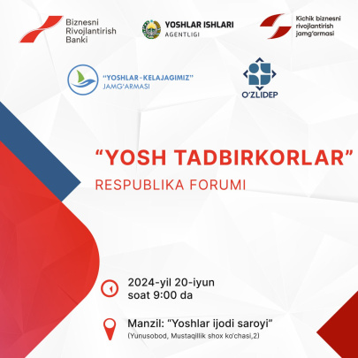
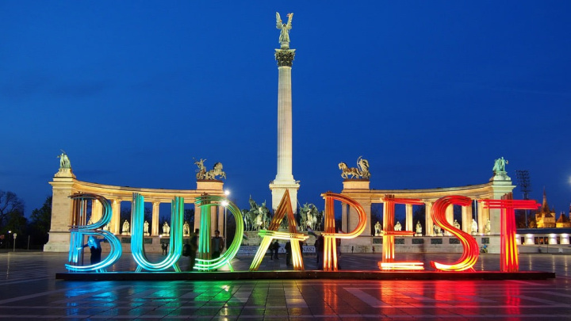

Biznes

«Yosh tadbirkorlar» forumiga marhamat!
«Yosh tadbirkorlar» forumiga marhamat!

Turizm – davlat iqtisodiyoti va aholi uchun eng qulay, daromadli soha. O‘zbekiston ikkinchi ma’muriyati davrida mamlakatni turizm uchun ochdi.
15-16 iyun kunlarida Shveytsariyaning Byurgenshtok kurort shahrida tinchlik sammiti o‘tkazilmoqda. 90 dan ortiq davlatlar o‘z vakillarini yuborishgan, aksar mamlakatlarning davlat yetakchilari sammitda qatnashishdi. Xo‘sh, sammitda qanday bayonotlar berildi?
Nega, klublar futboli ustunliklarga ega bo‘lib turib ham, jahon yoki Yevropa chempionatini o‘zgacha shukuh bilan kutib olamiz? Nega bir onda, ochilish o‘yinida madhiyalar yangrashi bilan hamma argumentlar unutiladi-da, «mana shu biz bilgan va sevgan futbol» deb yuboramiz?
Toshkent shahri markazida, “Novza” metro bekati yonida Ichki ishlar vazirligi JQBB tezkor vakili o‘z xizmat mashinasida bo‘g‘ib o‘ldiriladi.
Shu paytgacha dunyoning ko‘plab davlatlari turli sabablar bilan o‘z poytaxtini o‘zgartirgan. Qaysidir davlatda ekologik muammolar boshlangani yoki shahar juda tiqilinch bo‘lib qolgani uchun, boshqasida esa mamlakatning turli hududlarini rivojlantirish uchun poytaxtlar ko‘chirilgan. Yana ba’zilarining ko‘chirilishiga siyosiy, boshqalariga iqtisodiy omillar sabab bo‘lgan.
20-asrning iqtisodiy mo‘jizalaridan biri – Yaponiyada qisqa vaqtda erishilgan juda katta iqtisodiy yuksalish. Yapon jamiyati bugungi farovonlikka kimlarning xizmatlari evaziga erishilganini yaxshi tushungan holda, keksalarni parvarishlashga katta e’tibor qaratadi. Ya’ni millatni oyoqqa turg‘izgan avlod – hozirgi avlodning e’zozida.
Ko‘pchilik agar bola tabiiy tug‘uruq bilan emas, balki kesarcha kesish usulida tug‘ilsa, sog‘lomroq bo‘ladi deb hisoblaydi. Chindan ham shundaymi? Kun.uz shu kabi qator savollarga javob olish uchun mutaxassislar fikrini o‘rgandi.
Ijtimoiy tarmoqlarda bolalar ishtirokida olinadigan kontentlar ortida qanday maqsadlar yotadi? Ushbu kontentlar bolalarning ruhiyati va tarbiyasiga, ularni kuzatayotgan bolalar auditoriyasiga qanday ta’sir qiladi? Kun.uz bu masalada mutaxassis va bolalar huquqlarini himoya qiluvchi tashkilot fikrlarini o‘rgandi.